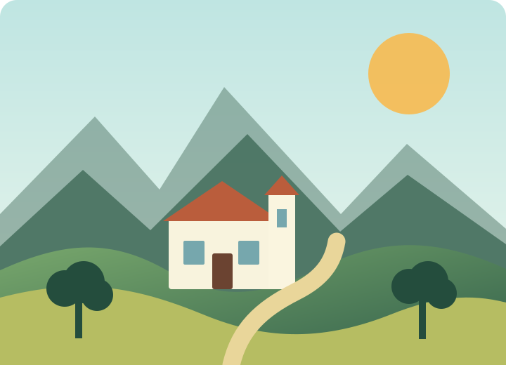

Naturaleza
Caminito del Rey
Un recorrido por pasarelas suspendidas entre los desfiladeros de Málaga.
Naturaleza, cultura y patrimonio
Explora una pequeña selección de planes para disfrutar de la comunidad a pie, en familia o descubriendo su historia.

Propuestas destacadas
Naturaleza
Un recorrido por pasarelas suspendidas entre los desfiladeros de Málaga.
Cultura
Un paseo por plazas y palacios renacentistas declarados Patrimonio Mundial.
En familia
Duna, playa y restos romanos en una ruta sencilla por la costa de Cádiz.
Naturaleza
Bosques, miradores y el nacimiento del Guadalquivir en el corazón de Jaén.
Cultura
Calles, jardines y miradores alrededor del impresionante Tajo de Ronda.
En familia
Un recorrido accesible para observar flamencos y conocer este humedal malagueño.
Rutas guardadas: 0
Sobre esta web
Esta aplicación reúne propuestas breves para descubrir Andalucía. Se ha construido con HTML, CSS y JavaScript, sin bibliotecas externas.
Su estructura permite incorporar nuevas rutas y funcionalidades de manera progresiva.
Contacto
Si tienes alguna pregunta, sugerencia o quieres recomendarnos una nueva ruta por Andalucía, puedes enviarnos un mensaje mediante el siguiente formulario.